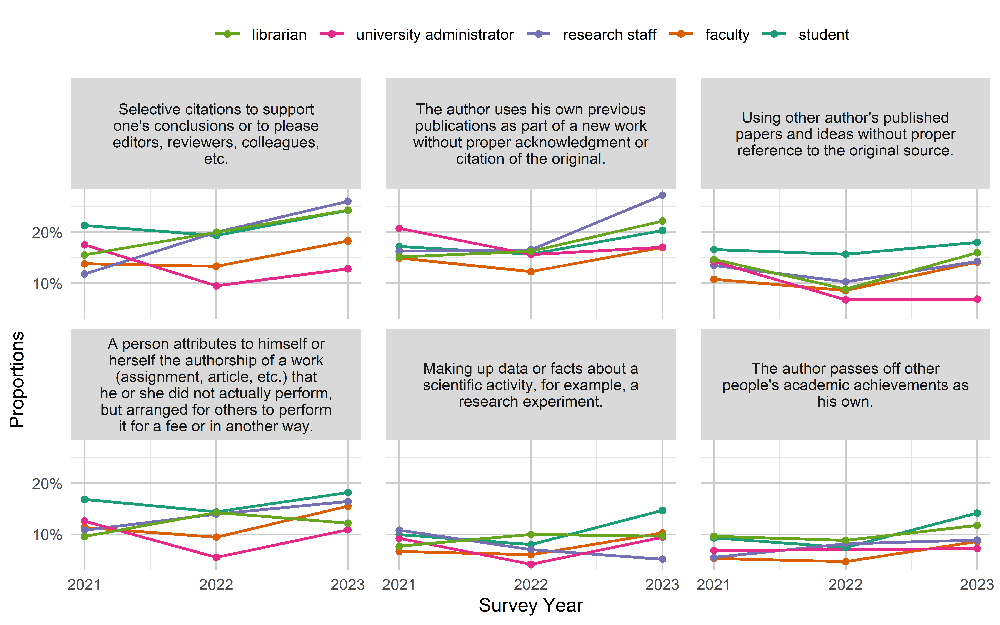
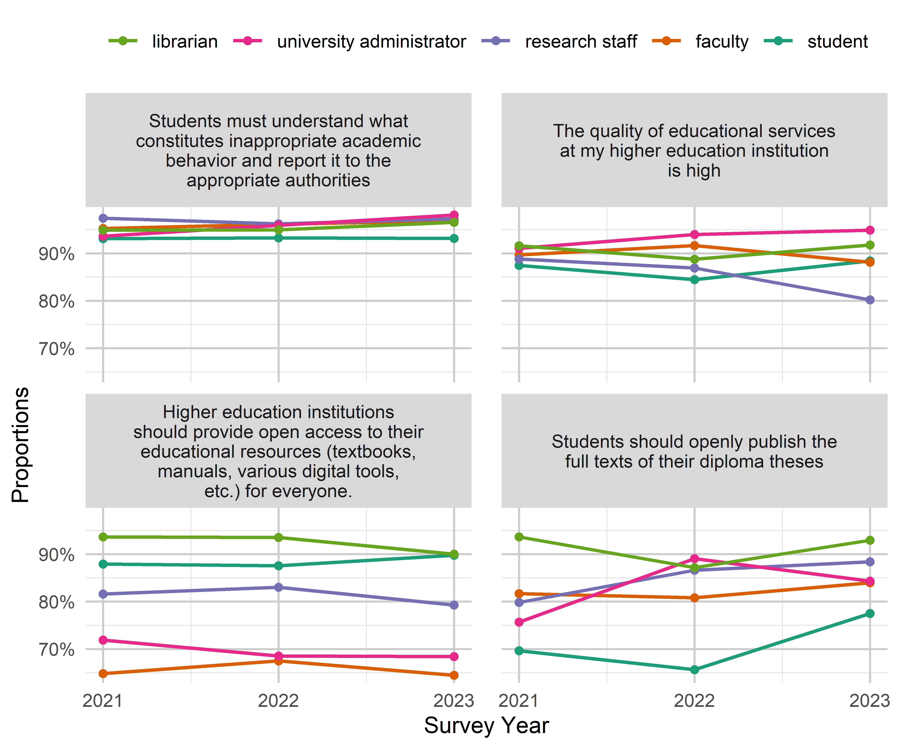
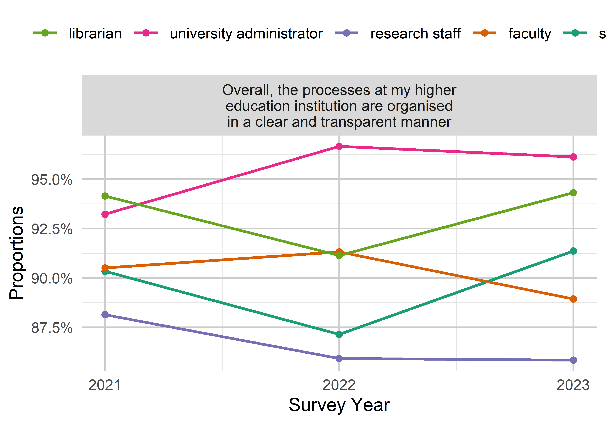

The following plots give a top-level overview over the responses to all questions, grouped by topics. They are also differentiated between questions that were about the extent of agreement with certain statements and questions that asked about the estimated frequency with which certain practices occur at the institution. The survey was conducted in three waves in three subsequent years, but all responses are combined for the overview plots.
Research
Open Science
Multiple questions within the survey inquired about how much participants agreed with certain statements related to different Open Science practices. The full statements in this group are presented in the table below.
Research results should be in open access, i.e. freely available to the academic community and the general public.
Open access to research results
X39
Research papers should be openly available even before the official peer review process, i.e. before a thorough review of their content.
Access prior to peer review
X42
Researchers should publish author’s versions of manuscripts on open online resources such as Zenodo, institutional repositories, etc.
Manuscripts on open platforms
X43
Researchers should invest time in describing their experimental data with appropriate metadata so that the data can be easily found and reused.
Appropriate metadata
X45
Experimental data should be published as openly as possible.
Open experimental data
X46
If software development is part of a research project, the source code should be published alongside the relevant scientific papers.
Open source code
X48
The names of peer reviewers of research papers should be made public, regardless of whether their conclusion is positive or negative.
Open peer reviewer identity
X49
The texts of positive and negative peer reviews of research papers should be published alongside these papers.
Open peer review reports
X50
Authors of research papers and peer reviewers should be able to communicate directly without intermediaries.
Open peer review interaction
X52
I can explain what “open science” is.
Understanding “Open Science”
In the following figure, responses are visualized to the Open Science questions. They are sorted by the amount of agreement with these statements. Proportions of the different answer categories were calculated after removing missing and “don’t know” responses. These responses are plotted separately on the right hand side, indicating their percentage of the total responses.
plot_agreement_overview(df, var_overview, os)
Reporting and Academic Integrity
Nine items inquire about the agreement with statements related to reporting and academic integrity. The full items are presented in the table below.
Researchers should publish all research results (both positive and negative)
Publication of all results
X18
All co-authors are fully responsible for the content of the publication, regardless of the amount of their contribution
Full co-author responsibility
X19
Changes to experimental data after the end of the experiment are acceptable
Post-hoc changes to data
X20
It is necessary to indicate the authorship of all those who have contributed to the research without exception
Authorship for all contributors
X21
Researchers should report any conflicts of interest when publishing research results and applying for funding
Disclosure of conflicts of interest
X40
Authors should retain intellectual property rights to their published works, even at the cost of giving up some opportunities for free publication
Retained intellectual property rights
X41
Scholars should explain the results of their research to the general public in an understandable way.
Clear public communication
X44
Time should be invested in describing research methodology, tools, and experimental results in detail so that other researchers can reproduce them.
Detailed research methodology
X47
Researchers should always strive to ensure that their research serves a broad public purpose, regardless of the field of science in which they work.
Research serving public purpose
Caution: Question X19 (“Changes to the experimental data […] are acceptable”) is the only statement phrased in the opposite direction. This needs to be considered when interpreting the responses.
plot_agreement_overview(df, var_overview, raia)
Six questions were about the frequency with which certain questionable research practices around reporting occur at the respondent’s institution (see table below).
Using other author’s published papers and ideas without proper reference to the original source.
Sources not referenced
X25
The author uses his own previous publications as part of a new work without proper acknowledgment or citation of the original.
Self-plagiarism
X26
Making up data or facts about a scientific activity, for example, a research experiment.
Fabrication of data/facts
X27
Selective citations to support one’s conclusions or to please editors, reviewers, colleagues, etc.
Selective citations
X28
The author passes off other people’s academic achievements as his own.
Plagiarism
X29
A person attributes to himself or herself the authorship of a work (assignment, article, etc.) that he or she did not actually perform, but arranged for others to perform it for a fee or in another way.
Academic ghostwriting
The following overview plot is sorted by the proportion of “never” and “rarely” responses. These questions could not be skipped, therefore there are no missing answers.
plot_frequency_overview(df, var_overview, raif)
Education
While most questions referred to research, others focused more on education at the respective HEI. Respondents were inquired about their agreement with certain education-related statements (see table below), most of them also related to Open Science, but in an educational context.
The quality of educational services at my higher education institution is high
High quality educational services
X22
Students should openly publish the full texts of their diploma theses
Open access to diploma theses
X23
Students must understand what constitutes inappropriate academic behavior and report it to the appropriate authorities
Students reporting misconduct
X51
Higher education institutions should provide open access to their educational resources (textbooks, manuals, various digital tools, etc.) for everyone.
Students use cheat sheets, smartphones, or other means of cheating during exams or tests.
Unauthorized aids during exams
X32
Students and teachers use unauthorized software (so-called “pirated software”).
Use of pirated software
plot_frequency_overview(df, var_overview, eduf)
Institution/Administration
The survey contained five questions on how misconduct is handled at the respondent’s respective institution. Respondents indicated the frequency with which certain practices occurred at their institution.
The administration of the institution tolerates cases of academic dishonesty.
Tolerated misconduct
X35
Falsely accusing a student or employee of misconduct or other violations.
False accusations
X36
Abuse of official position or authority to encourage academic dishonesty.
Encouraged misconduct
X37
The university administration accuses and punishes whistleblowers of academic integrity violations.
Punishment for whistleblowers
plot_frequency_overview(df, var_overview, adm)
One general item also inquired about the following statement: “Overall, the processes at my higher education institution are organised in a clear and transparent manner”. The agreement is visualized by the different institutional vs. the national survey.
Since the survey was conducted in three separate waves (2021, 2022, 2023), responses are also compared between those years. Similar to the overview plots where “don’t know” and missing responses were separated out before calculating proportions of certain response categories, these are also filtered out here. Percentages therefore refer to all respondents that chose one of the response categories presented in the figure.
An alternative plot type to the line plot is the area plot. For the following exemplary item (X15: “Overall, the processes at my higher education institution are organised in a clear and transparent manner”) both plots are shown for comparison.
line <-plot_agreement_line(df, "X15", FALSE)area <-plot_agreement_area(df, "X15", TRUE)line + area
Comparison Between Groups
To compare agreement over time across groups, the responses were dichotomized into agreement (“rather agree”, “strongly agree”) and disagreement (“rather disagree”, “strongly disagree”). This way the percentage of respondents agreeing with a certain statement can be compared across groups and over time. Frequency responses were recoded into “often” (“very often”, “frequently”) and “not often” (“sometimes”, “rarely”, “never”). Missing responses and “don’t know” answers were removed before the percentages were calculated. As in the previous section, percentages refer to all respondents that chose one of the response categories presented (and not “don’t know”).
Academic Roles
To compare respondents with different academic roles, students are first summarized for purposes of visualization (see below for differentiated visualizations for this group). The “other” category was additionally excluded, since it is quite small and difficult to characterize. Some groups differ quite substantially in their size (e.g., lot of faculty, only few librarians). This has to be taken into account for interpretation.
plots <-list()for (q in os) { plot <-plot_agreement_groups(roles, question = q, "roles") plots[[q]] <- plot}wrap_plots(plots, ncol =2) +plot_layout(guides ="collect")
Reporting and Academic Integrity
plots <-list()for (q in raia) { plot <-plot_agreement_groups(roles, question = q, "roles") plots[[q]] <- plot}wrap_plots(plots, ncol =2) +plot_layout(guides ="collect")
plots <-list()for (q in raif) { plot <-plot_frequency_groups(roles, question = q, "roles") plots[[q]] <- plot}wrap_plots(plots, ncol =2) +plot_layout(guides ="collect")

Education
plots <-list()for (q in edua) { plot <-plot_agreement_groups(roles, question = q, "roles") plots[[q]] <- plot}wrap_plots(plots, ncol =2) +plot_layout(guides ="collect")

plots <-list()for (q in eduf) { plot <-plot_frequency_groups(roles, question = q, "roles") plots[[q]] <- plot}wrap_plots(plots, ncol =2) +plot_layout(guides ="collect")
Institution/Administration
plots <-list()for (q in adm) { plot <-plot_frequency_groups(roles, question = q, "roles") plots[[q]] <- plot}wrap_plots(plots, ncol =2) +plot_layout(guides ="collect")
plot_agreement_groups(roles, "X15", "roles")

Students by Year
In the plots above, students were all grouped into one category. Since it is of interest how students’ perceptions differ depending on the stage of their studies, they are compared more closely in the subsequent figures (these could maybe added to the appendix).
The survey was conducted both at a national level and separately within the OPTIMA partner HEIs. To compare developments over time between these surveys, following visualizations are created (again with dichotomized responses).
Open Science
plots <-list()for (q in os) { plot <-plot_agreement_groups(students, question = q, "X63") plots[[q]] <- plot}wrap_plots(plots, ncol =2) +plot_layout(guides ="collect")
Reporting and Academic Integrity
plots <-list()for (q in raia) { plot <-plot_agreement_groups(df, question = q, "X63") plots[[q]] <- plot}wrap_plots(plots, ncol =2) +plot_layout(guides ="collect")
plots <-list()for (q in raif) { plot <-plot_frequency_groups(df, question = q, "X63") plots[[q]] <- plot}wrap_plots(plots, ncol =2) +plot_layout(guides ="collect")
Education
plots <-list()for (q in edua) { plot <-plot_agreement_groups(df, question = q, "X63") plots[[q]] <- plot}wrap_plots(plots, ncol =2) +plot_layout(guides ="collect")
plots <-list()for (q in eduf) { plot <-plot_frequency_groups(df, question = q, "X63") plots[[q]] <- plot}wrap_plots(plots, ncol =2) +plot_layout(guides ="collect")
Institution/Administration
plots <-list()for (q in adm) { plot <-plot_frequency_groups(df, question = q, "X63") plots[[q]] <- plot}wrap_plots(plots, ncol =2) +plot_layout(guides ="collect")
plot_agreement_groups(df, "X15", "X63")
Displacement
In 2022, respondents were additionally asked about whether their HEI had been displaced (in 2014, 2022, or not at all). The following figures show reponses to the items in comparison between displaced and non-displaced HEIs. Responses were again dichotomized to agreement/disagreement and high frequency/low frequency.
In 2022, one additional question inquire participants about whether they were aware that the Ukrainian government had recently approved a National Open Science Plan.
os_plan <- dfd %>%tabyl(X59) %>%adorn_percentages("col") %>%adorn_pct_formatting(digits =1) %>%adorn_ns()knitr::kable(os_plan, format ="html")